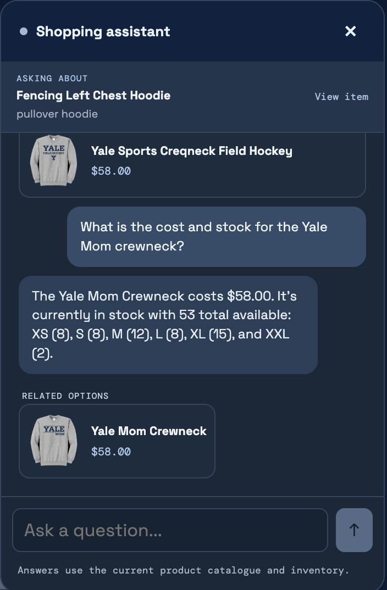
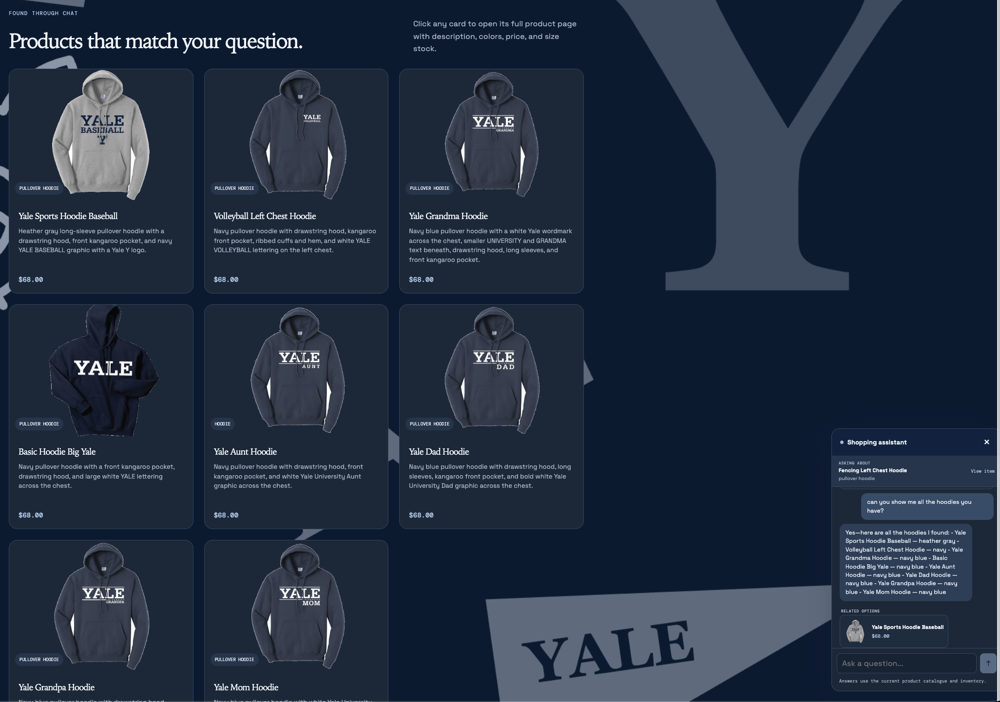
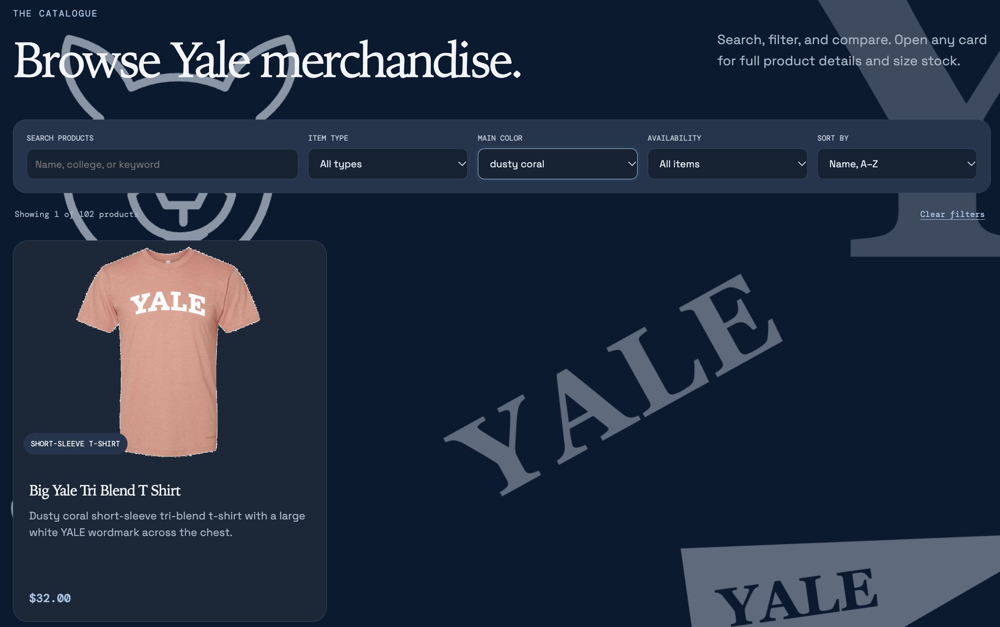

Chat checks an item’s stock and price

Screenshot pending
app_check_images/inventory.pngCategory chat search shows product cards on the page

Screenshot pending
app_check_images/dynamic_search_results_card.pngCatalogue search and main-color filter

Screenshot pending
app_check_images/usability_improvement.png